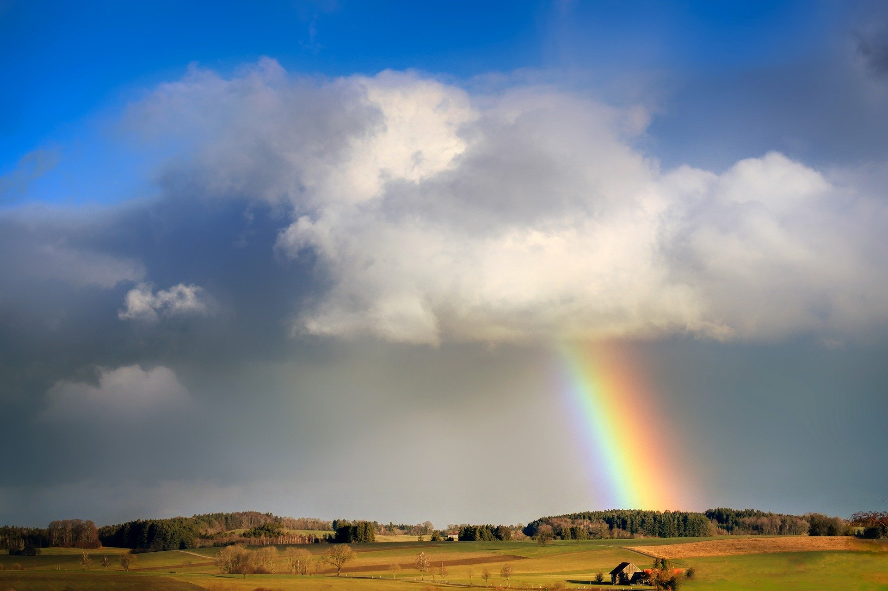

Pénteken a napsütést elsősorban csak fátyolfelhők szűrhetik, csapadék sehol sem várható. Mérséklődik, legyengül a szél. Hajnalra helyenként pára- és ködfoltok alakulhatnak ki. Reggel 3 és 9, délután 17 és 22 fok között alakul a hőmérséklet.
Szombaton a reggeli párás, ködös időt követően kisüt a nap, és csak fátyolfelhők szűrhetik a napsütést. Estig csapadék nem várható, majd az esti órákban nyugatra eső, zápor érkezhet, és feltámadhatz északnyugati szél. A legmelegebb órákban 18-23 fokot mérhetünk.
Vasárnap nyugaton, északon és a Dunántúlon egy hidegfront miatt időnkénti esőre, záporokra, feltámadó északnyugati szélre kell számítani. Itt a csúcshőmérséklet is csak 10-15 fok körül alakulhat, máshol viszont még szárazabb időre, 15-21 fokra van kilátás. Este, éjjel már többfelé várható csapadék. Hétfőn esős, szeles, hűvös idő valószínű.
| Hétfő | 14 | 7 |
|---|---|---|
| Kedd | 12 | 6 |
| Szerda | 12 | 5 |
Pénteken a napsütést elsősorban csak fátyolfelhők szűrhetik, csapadék sehol sem várható. Mérséklődik, legyengül a szél. Hajnalra helyenként pára- és ködfoltok alakulhatnak ki. Reggel 3 és 9, délután 17 és 22 fok között alakul a hőmérséklet.
Szombaton a reggeli párás, ködös időt követően kisüt a nap, és csak fátyolfelhők szűrhetik a napsütést. Estig csapadék nem várható, majd az esti órákban nyugatra eső, zápor érkezhet, és feltámadhat az északnyugati szél. A legmelegebb órákban 18-23 fokot mérhetünk.
Vasárnap nyugaton, északon és a Dunántúlon egy hidegfront miatt időnkénti esőre, záporokra, feltámadó északnyugati szélre kell számítani. Itt a csúcshőmérséklet is csak 10-15 fok körül alakulhat, máshol viszont még szárazabb időre, 15-21 fokra van kilátás. Este, éjjel már többfelé várható csapadék. Hétfőn esős, szeles, hűvös idő valószínű.
Csütörtökön kezdetben a Dunától keletre fekvő tájakon várható eső, így az erre autózóknak vizes, csúszós utakra kell készülniük. Napközben mindenhol fokozatosan megszűnik a csapadék, egyre nagyobb területen süt ki a nap, így vezetés közben szükség lehet a napszemüvegekre. Sokfelé élénk, erős északi-északnyugati széllökések csökkenthetik jelentősebb mértékben a járművek menetstabilitását. Vezessünk körültekintően, tartsunk nagyobb követési távolságot! Balesetmentes közlekedést kívánunk!
A nap fotója
